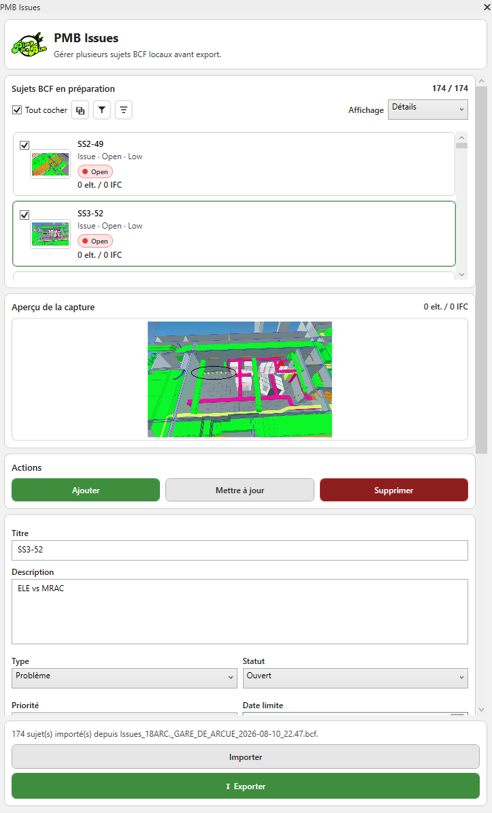
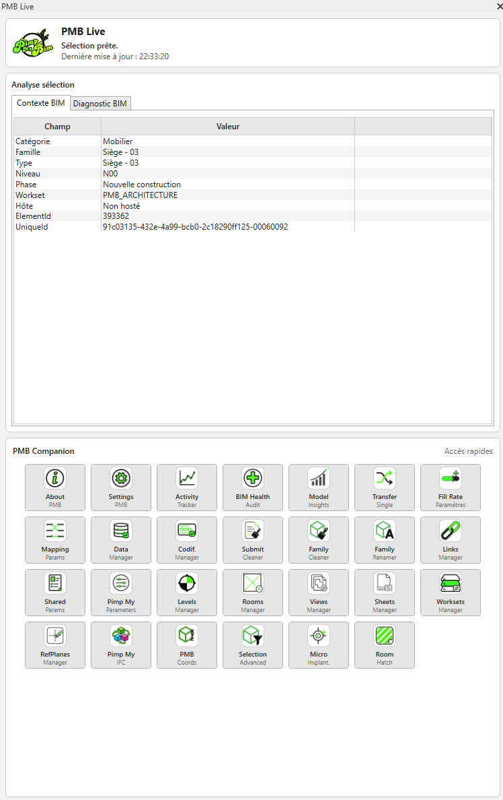
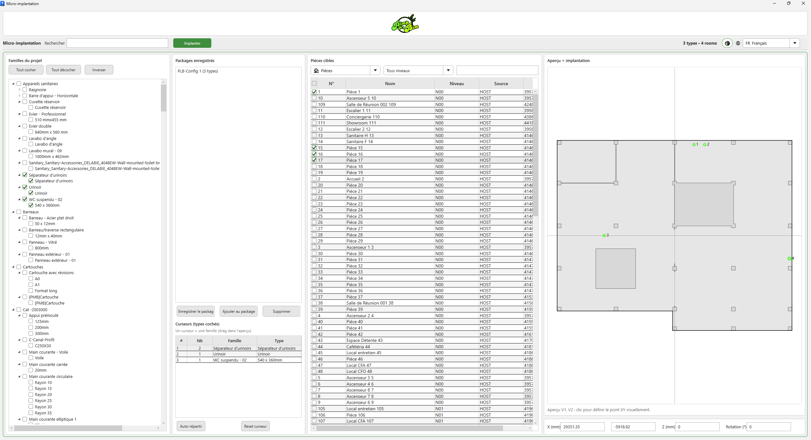
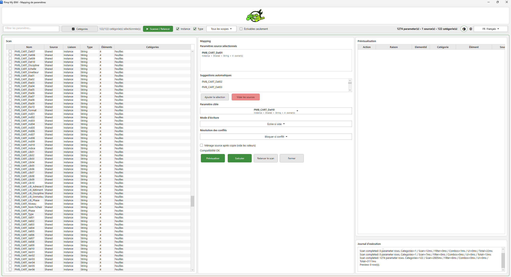

Vue d’ensemble
Pimp My BIM est un add-in Revit organisé en outils spécialisés pour l’audit, la coordination, les données, la gestion du modèle, la productivité et le nettoyage avant livraison.
Installation
Le plugin s’appuie sur le mécanisme standard des add-ins Revit.
BIM Health
Dashboard d’audit et de santé de la maquette.

PMB Issues / BCF
Gestion structurée des sujets de coordination BCF.

Activity Tracker
Suivi de l’activité des commandes PMB.
PMB Live
Assistant BIM synchronisé avec la sélection active Revit.

Advanced Selection
Sélections ciblées et répétables.

PMB Coordinates
Calcul et exploitation des coordonnées des éléments.

Pimp My IFC
Classification IFC assistée.

Pimp My Links
Audit et gestion des liens externes.

Transfer Single
Copie d’un élément entre documents Revit.

Level Manager
Audit et gestion des niveaux.

Pimp My Parameters
Création et contrôle des paramètres en masse.

Shared Params Manager
Gestion des paramètres partagés.

Workset Manager
Gestion des sous-projets.

View Manager
Gestion des vues du projet.

Sheets Manager
Gestion en masse des feuilles.

Room / Space Manager
Analyse des pièces et espaces.

Hatch Room
Outil de pochage des pièces.

Microimplantation
Implantation automatisée de familles dans une pièce cible.

Reference Planes Manager
Analyse des plans de référence.

Parameter Fill Rate
Audit du taux de remplissage des paramètres.

Parameter Mapping
Mapping et transfert de paramètres.

Codification Manager
Contrôle et application des règles de codification.

Data Manager
Extraction et audit des données BIM.

Submit Cleaner
Préparation de la maquette avant livraison.

Family Cleaner
Nettoyage contrôlé des familles Revit.

Family Renamer
Renommage des familles avec prévisualisation et règles.

Bulk Family Save
Traitement et sauvegarde en série des familles.